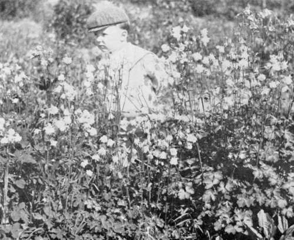

On Feminine Taste In Rural Affairs. Part 3
Description
This section is from the book "Landscape Gardening", by Andrew Jackson Downing. Also available from Amazon: Landscape Gardening.
On Feminine Taste In Rural Affairs. Part 3
"A short hour after this brought us into another relation; for the dinner bell summoned us, and this same lady was found presiding over a brilliant circle of the highest rank and fashion, with an ease, elegance, wit, intelligence, and good humor, with a kind attention to every one's wants, and unaffected concern for every one's comfort, which would lead one to suppose that this was her only and her peculiar sphere. Now 1 will not say how many mud-puddles we had waded through, and how many manure heaps we had crossed, and what places we had explored, and how every farming topic was discussed; but I will say that she pursued her object without any of that fastidiousness and affected delicacy, which pass with some persons for refinement, but which, in many cases, indicate a weak, if not a corrupt mind. . . .
"Now I do not say that the lady to whom I have referred was herself the manager of the farm; that rested entirely with her husband; but I have intended simply to show how gratifying to him must have been the lively interest and sympathy which she took in concerns which necessarily so much engaged his time and attention; and how the country would be divested of that dullness and ennui, so often complained of as inseparable from it, when a cordial and practical interest is taken in the concerns which belong to rural life. I meant also to show — and this and many other examples, which have come under my observation, emphatically do show — that an interest in, and familiarity with, even the most humble occupations of agricultural life, are not inconsistent with the highest refinements of taste, the most improved cultivation of the mind, and elegance, and dignity of manners, unsurpassed in the highest circles of society".
This picture is thoroughly English; and who do our readers suppose this lady was? Mr. Colman puts his finger on his lips, and declares that however much he may be questioned by his fair readers at home, he will make no disclosures. But other people recognize the portrait; and we understand it is that of the Duchess of Portland.
Fig. 40. Double Columbines.
Now, as a contrast to this, here is a little fragment -a mere bit--but enough to show the French feeling about country life. It is from one of Madame de Sevigne's charming letters; and, fond of society as she was, she certainly had as much of love of the country as belongs to her class and sex on her side of the channel. It is part of a letter written from her country home. She is writing to her daughter, and speaking of an expected visit from one of her friends:
"It follows that, after I have been to see her, she will come to see me, when, of course, I shall wish her to find my garden in good order; my walks in good order — those fine walks, of which you are so fond. Attend also, if you please, to a little suggestion in passing. You are aware that haymaking is going forward. Well, I have no haymakers.
I send into the neighboring fields to press them into my service; there are none to be found; and so all my own people are summoned to make hay instead. But do you know what haymaking is? I will tell you.
Haymaking is the prettiest thing in the world. You play at turning the grass over in a meadow; and as soon as you know that, you know how to make hay".
Is it not capital? We italicize her description of haymaking, it is so French, and so totally unlike the account that the Duchess would have given Mr. Colman. Her garden, too; she wanted to have it put in order before her friend arrived. She would have shown it, not as an English woman would have done, to excite an interest in its rare and beautiful plants, and the perfection to which they had grown under her care, but that it might give her friend a pleasant promenade.
Now we have not the least desire, that American wives and daughters should have anything to do with the rough toil of the farm or the garden, beyond their own household province. We delight in the chivalry which pervades this whole country, in regard to the female character, and which even foreigners have remarked as one of the strongest national characteristics.* But we would gladly have them seize on that happy medium, between the English passion for everything out of doors, and the French taste for nothing beyond the drawing room. Everything which relates to the garden, the lawn, the pleasure grounds, should claim their immediate interest. And this, not merely to walk out occasionally and enjoy it; but to know it by heart; to do it, or see it all done; to know the history of any plant, shrub, or tree, from the time it was so small as to be invisible to all but their eyes, to the time when every passer-by stops to admire and enjoy it; to live, in short, not only the indoor but the out-of-door life of a true woman in the country. Every lady may not be "born to love pigs and chickens" (though that is a good thing to be born to); but, depend upon it, she has been cut off by her mother nature with less than a shilling's patrimony, if she does not love trees, flowers, gardens, and nature, as if they were all part of herself.
* M. Chevalier, one of the most intelligent of recent French travellers, says, in his work on this country — " Not only does the American mechanic and farmer relieve, as much as possible, his wife from all severe labor, all disagreeable employments, but there is also, in relation to them, and to women in general, a disposition to oblige, that is unknown among us, even in men who pique themselves upon cultivation of mind and literary education." ******
We half suspect, if the truth must be told, that there is a little affectation or coquetry among some of our fair readers, in this want of hearty interest in rural occupation. We have noticed that it is precisely those who have the smallest gardens, and, therefore, who ought most naturally to wish to take the greatest interest in their culture themselves, — it is precisely those who depend entirely upon their gardener. They rest with such entire faith on the chivalry of our sex, that they gladly permit everything to be done for them, and thus lose the greatest charm which their garden could give — that of a delightful personal intimacy.
Continue to:
- prev: On Feminine Taste In Rural Affairs. Part 2
- Table of Contents
- next: On Feminine Taste In Rural Affairs. Part 4